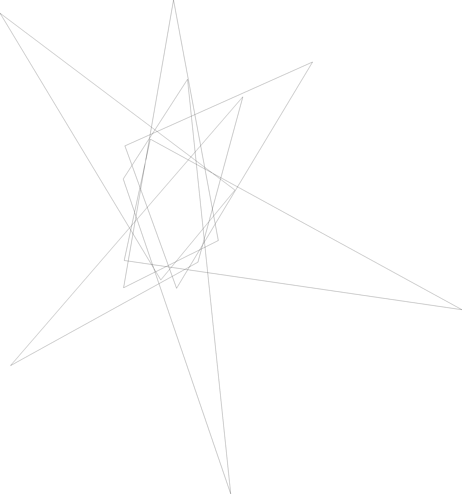
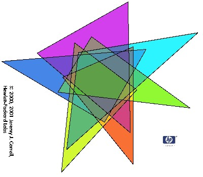

Section 5.2 Diagrams made from convex \(k\)-gons
Let the term \(k\)-gon designate any convex polygon with at most \(k\) sides. Observe that two \(k\)-gons can (finitely) intersect with each other in at most \(2k\) points; for the purposes of this discussion we can treat a circle as a 1-gon and an ellipse as a 2-gon. We start off with a lemma first observed by Grünbaum [Gr75] , and discuss its consequences. RELATE THIS TO EARLIER THEOREM.
Proof.
Given a diagram of \(k\)-gons, the number of vertices contributed by any two of them can be at most 2\(k\text{,}\) so the number of vertices must be at most \(2 k {n \choose 2}\text{.}\) Since the number of vertices in a simple diagram is \(2^n - 2\text{,}\) the inequality follows.
A slight improvement to this theorem was obtained in [CRW] .
Theorem 5.2.2.
For a simple \(n\)-Venn diagram of \(k\)-gons to exist, \(k \ge \lceil (2^n-2-n) / n(n-2) \rceil \text{.}\)The following table lists implications of Theorem 5.2.2 as the column with header \(k \ge\text{.}\) The column with header \(k \le\) is from a known construction.
| \(n\) | \(k \ge\) | Notes |
|---|---|---|
| 3 | 1 | E.g., the 3-circle diagram. |
| 4 | 2 | Doable with ellipses or triangles. |
| 5 | 2 | Many known examples of symmetric and non-symmetric diagrams for ellipses, triangles, etc. Conjectured to not be possible for squares by Grünbaum [Gr92b] . |
| 6 | 3 | Solved for triangles by Carroll [Ca00] . No congruent examples known. |
| 7 | 4 | Grünbaum constructed an independent family (not a Venn diagram) of seven hexagons. Solved for convex symmetric 4-gons (see Figure 5.2.5) by the authors. No diagram of 7 triangles is possible. |
| 8 | 6 | \(k \le 64\) |
| 9 | 8 | \(k \le 128\) |
| 10 | 13 | \(k \le 256\) |
Subsection 5.2.1 Triangles
Jeremy Carroll, while he was employed at HP Labs (Bristol, England), in [Ca00] solved the problem of finding a collection of six triangles that form a Venn diagram.
There is a simple symmetric 5-Venn diagram in which each curve is a triangle; see Figure 4.7.3, redrawn from Grünbaum [Gr92b] . Grünbaum [Gr84b] asked whether there was a 6-Venn diagram made from triangles. Years later, this question was answered in the affirmative by Jeremy Carroll, while he was employed at HP Labs (Bristol, England), in [Ca00] . His first discovered example is shown below, and like his other diagrams, it is simple. He subsequently discovered that there are exactly 126 different 6-Venn diagrams that can be drawn where each curve is a triangle.

Below is a table of coordinates for the vertices of the six triangles.
| \((x_1,y_1)\) | \((x_2,y_2)\) | \((x_3,y_3)\) |
|---|---|---|
| \((-69277, -32868)\) | \((135580, 121186)\) | \((70900, 199427)\) |
| \((333561, 225349)\) | \((61764, 76805)\) | \((38980, 182461)\) |
| \((81988, -44426)\) | \((38444, 206222)\) | \((121044, 165111)\) |
| \((-60184, 274046)\) | \((142476, 39903)\) | \((103276, 183962)\) |
| \((131886, 385785)\) | \((38136, 111491)\) | \((94208, 24690)\) |
| \((203271, 9619)\) | \((39604, 82683)\) | \((84652, 206669)\) |
Below is another nicer example (this jpeg image courtesy of Jeremy Carroll).

Triangles cannot be used to construct a 7-Venn diagram; the proof for the simple case is quite short. A full proof in the non-simple case may be found in [CRW] . Although it follows from Theorem 5.2.2, we provide below a proof that there is no simple 7-Venn diagram whose curves are triangles.
Theorem 5.2.4.
A simple Venn diagram of 7 triangles is impossible.Proof.
Assume such a diagram exists. By counting the number of vertices, as in Lemma G above, we see that \(6{7 \choose 2} = 2^7 - 2\text{;}\) thus, every pair of triangles must intersect in six points. Thus for any corner \(A\) of any triangle \(t\text{,}\) and any other triangle \(t'\text{,}\) the point \(A\) lies outside \(t'\text{.}\) Thus \(A\) lies on the outer face of the diagram, and the other face at \(A\) is the one inside \(t\) alone. Since the same argument holds for a second corner \(B\) of \(t\text{,}\) we have that the non-outer face at \(A\) is also the non-outer face at \(B\text{,}\) but an edge of \(t'\) separates them. Thus we have a disconnected region, which contradicts the fact that the diagram is a Venn diagram.
Subsection 5.2.2 \(k\)-gons for \(k > 3\)
We note that many constructions for Venn diagrams produce diagrams of \(k\)-gons where the value \(k\) is a function of \(n\) (for examples, see [PS] or [Gr75] ). By the results of [BGR] any convex \(n\)-FISC (and consequently any monotone \(n\)-Venn diagram) with \(N\) points of intersection is drawable with \(N\)-gons. As a consequence any monotone \(n\)-Venn diagram can be drawn with \((2^n-2)\)-gons. Grünbaum’s convex construction [Gr75] is very much like Edwards’ general construction, except that the initial circle is replaced by a square and the \(n\)th curve is a \(2^{n-2}\)-gon; this gives the upper bounds in the table above. Also, Grünbaum [Gr75, pg.17] states that "the construction we used ... is a modification to convex polygons of the method described in More [Mo] ."
In [CRW] Carroll, Ruskey, and Weston proved that there is a symmetric 7-Venn diagram drawn with 4-gons, which meets the lower bound of Theorem 5.2.2. See Figure 5.2.5. The coordinates of one of the quadrilaterals is given in the list below. The other 6 quadrilaterals may be obtained from this one by rotating about the origin. The diagram is isomorphic to "Victoria".
\begin{equation*}
(-0.446, 0.000), (-0.123, -0.433), (\ 0.699,\ 0.061), (-0.081,\ 0.451)
\end{equation*}